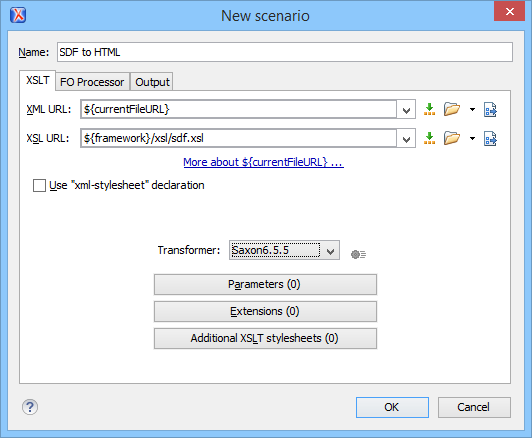

Configuring Transformation Scenarios for a Framework
When distributing a framework to users, it is a good idea to have the transformation scenarios already configured. This helps the content authors publish their work in various formats. By being contained in the framework configuration, the scenarios can be distributed along with the actions, menus, toolbars, and catalogs.
These are the steps that allow you to create a transformation scenario for your framework.
-
Open the
Preferences dialog box and go to
Document Type Associations. Select the particular
framework, click the Edit button to open Document
Type Configuration dialog box, and choose the
Transformation tab. Click the
 New button and choose the
appropriate type of transformation (for example, XML transformation with
XSLT).
In the New scenario dialog box, fill in the following fields:
New button and choose the
appropriate type of transformation (for example, XML transformation with
XSLT).
In the New scenario dialog box, fill in the following fields:- Fill in the Name field with the name of your transformation scenario.
- Set the XSL URL field to path of your custom stylesheet (for example,
${framework}/xsl/mycustom.xsl).
Figure 1. Configuring a New XSLT Transformation Scenario 
Now the scenario is listed in the Transformation tab:
To test the transformation scenario that you just created, you can use the sample
sdf.xml file found in the sample framework customization package. Click the
 Apply
Transformation Scenario(s) button to display the Transform with dialog
box. The scenario list contains the scenario you defined earlier . Select the SDF to
HTML scenario that you just defined and click the Apply
associated button. The HTML file is saved in the same folder as the XML file
and displayed in the browser.
Apply
Transformation Scenario(s) button to display the Transform with dialog
box. The scenario list contains the scenario you defined earlier . Select the SDF to
HTML scenario that you just defined and click the Apply
associated button. The HTML file is saved in the same folder as the XML file
and displayed in the browser.